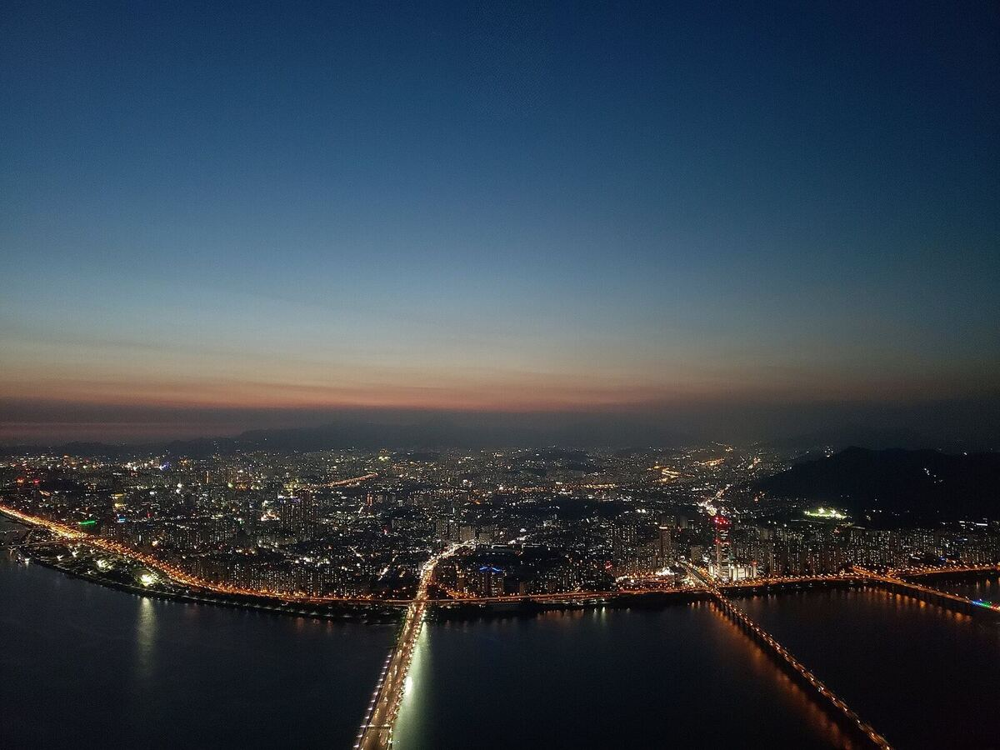
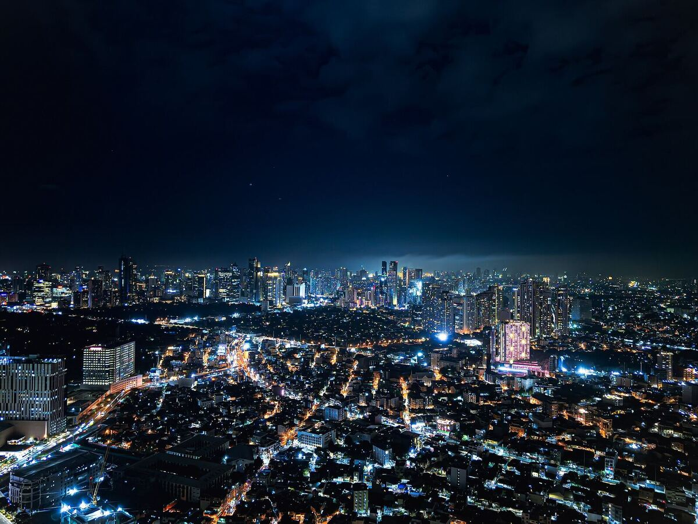
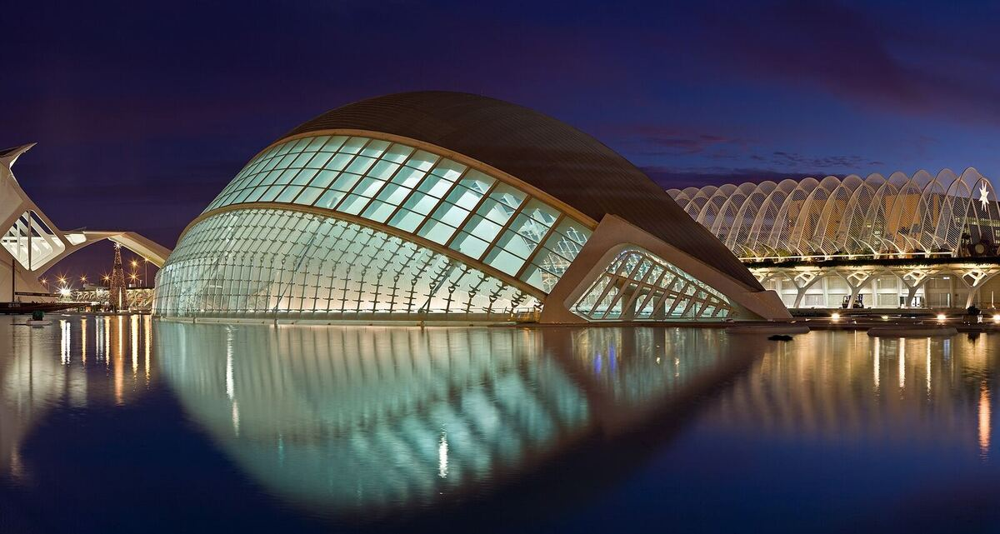
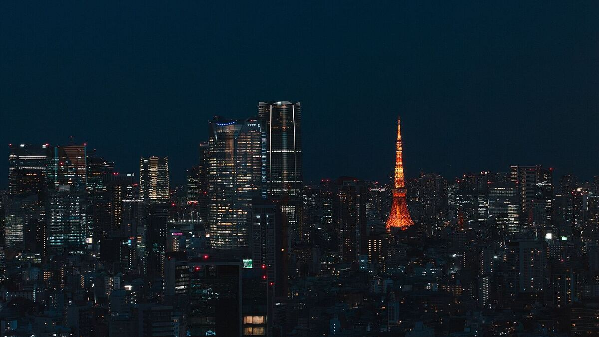
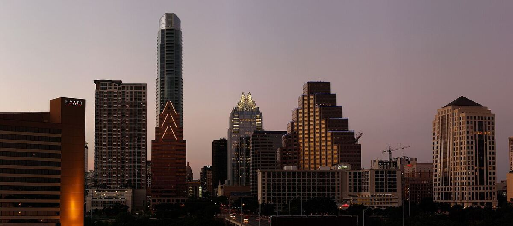

Kickoff — 2027.01

予選 → 地域大会 → 世界大会を、3回。
オンライン予選から地域大会、そして世界大会へ。日程は Pacific のものです。
2026年11〜12月
LAN
KickoffBangkok
1/11〜1/31 報道
2/20〜3/7 未定
未発表

LAN Cup 1Manila5/6〜5/23 報道

World MastersValencia6/5〜6/20 報道
未発表

LAN Cup 2Tokyo8/12〜8/29 報道

World ChampionsAustin9/16〜10/10 報道
Kickoffはバンコク、Cup 1はマニラ、Cup 2は東京。